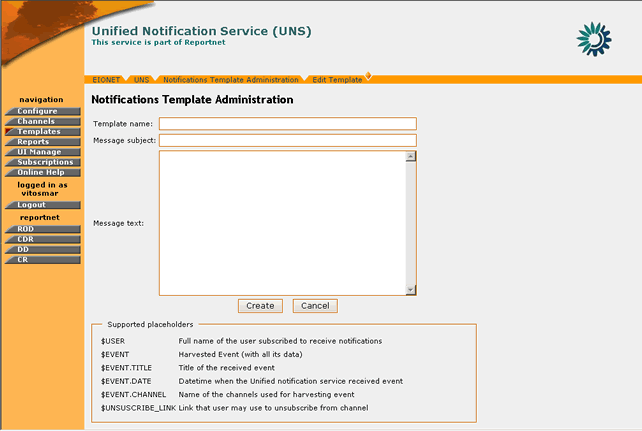
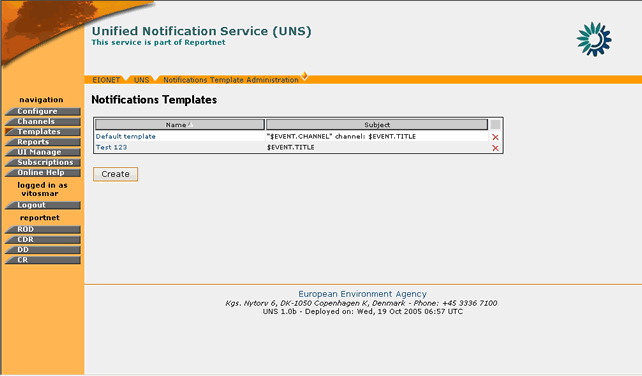
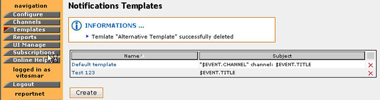

The format of the notifications that UNS sends to the REPORTNET Users is generated according to the notification templates. Notification templates are assigned to specific channels in order for UNS to decide what notification template should be used while generating a notification for a specific subscription.
Each notification generated by a specific channel will be affected by the settings of a template.
For example, concerning the channel “EEA-SVN Reportnet” in (Figure 8), a normal user that subscribes to the channel “EEA-SVN Reportnet” will receive notifications with a format based on the Template “Default Template”. Notification templates are not used while generating RSS feed or sending events data to the Reportnet Web dashboards.
Three preconfigured notification templates come along with the installation of the UNS. These are:
These default notification templates cannot be removed from the system. Nevertheless, they can be customized by UNS administrators.
Currently, the system does not allow the user to modify text formatting (fonts, colours, underlining etc.). In the notification template, the administrators can personalize the text of the notification as well as the title and the order in which information will be displayed.
Placeholders
In order to facilitate the creation and personalization of the notification templates, several “placeholders” are available. These placeholders are inserted where dynamic content[‡] is expected. When the notification arrives at the UNS user, these placeholders will contain the full message information.
The currently supported placeholders are:
For example, if a user needs to create a notification template with a greeting to the receiving user, the body of the template should begin with:
“Dear $USER,
The UNS has received the following event…”
In the same manner, the channel from which the notification message comes from can be indicated in the subject field of the template:
Subject: New event from $EVENT.CHANNEL channel
In order to create a Notification Template you must be logged in as UNS Administrator.
If you have administrator privileges, then the following steps must be followed:
STEP 1 – Login
If you are not already logged in, see: Authenticate User Account.
STEP 2 – Click on “Templates” button on the navigation bar.
Arriving at the Templates section, the user can view the list of existing notification templates.
STEP 3 – Click on “Create” button
In order to create a new notification template, you must click on the “Create” button and arrive at the template creation page.
STEP 4 – Fill-in required information
The information that needs to be inserted is: Template name, Message subject and Message Text.
The message subject and the Template fields are those which will be displayed at the user for every notification, while the template name is used solely for the identification of the template by the administrator.
Placeholders such as $USER, $EVENT etc. can be inserted to represent dynamic content which is decided upon the delivery of the notification. For more information on placeholders see section 4.4.1

Figure 12: Notification Template Creation page
STEP 5 – Create Notification Template
After inserting all the required information, press the “Update” button for the new Notification Template to be created. This new template will be visible in the Notification Template list.
In summary:
Step |
Create new Notification Template |
1 |
Login |
2 |
Click on “Templates” button |
3 |
Click on “Create” button |
4 |
Fill-in required information |
5 |
Create Notification Template |
In order to edit a Notification Template you must be logged in as UNS Administrator.
If you have administrator privileges, then the following steps must be followed:
STEP 1 – Login
If you are not already logged in, see: Authenticate User Account.
STEP 2 – Click on “Templates” button on the navigation bar.
Arriving at the Templates section, the user can view the list of existing notification templates.

Figure 13: Notification Template list
STEP 3 – Select Template to edit
Click on the name of an existing template in order to edit it. This will take you to the “Edit Template” page where the current template information is displayed.
STEP 4 – Edit Notification Template
Any of the Notification Template fields can be edited. You may perform any changes on the existing template data and decide to save changes.
STEP 5 – Update Notification Template
You must press the “Update” button in order for the changes to take effect.
In summary:
Step |
Edit Notification Template |
1 |
Login |
2 |
Click on “Templates” button |
3 |
Select Template to edit |
4 |
Edit Notification Template |
5 |
Update Notification Template |
In order to delete a Notification Template you must be logged in as UNS Administrator.
* Important note: A Notification Template cannot be deleted if it is used by a channel.
If you have administrator privileges, then the following steps must be followed:
STEP 1 – Login
If you are not already logged in, see: Authenticate User Account.
STEP 2 – Click on “Templates” button on the navigation bar.
Arriving at the Templates section, the user can view the list of existing notification templates.
STEP 3 – Select Template to delete
Tick the box of the template you wish to delete. Then press the “Delete” button on the bottom of the screen.
STEP 4 – Delete Notification Template
If the deletion was successful, the appropriate message will be displayed and the Notification Template list will be updated respectively.

Figure 14: Information message after notification template deletion
In summary:
Step |
Edit Notification Template |
1 |
Login |
2 |
Click on “Templates” button |
3 |
Select Template to delete |
4 |
Delete Notification Template |
[‡] Dynamic content is considered to be the channel content that changes from event to event (date, title, message body etc.)